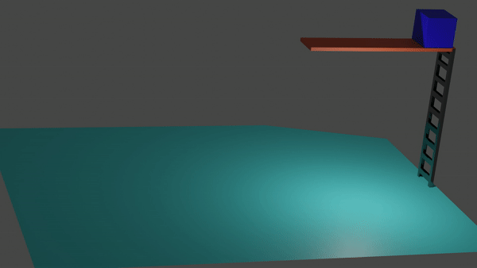
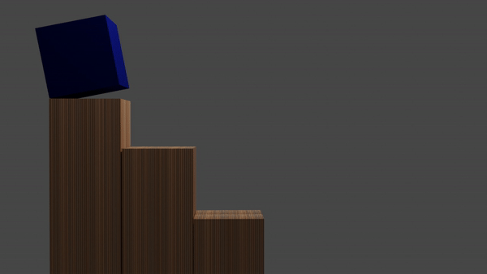
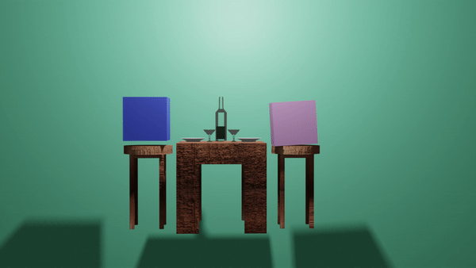
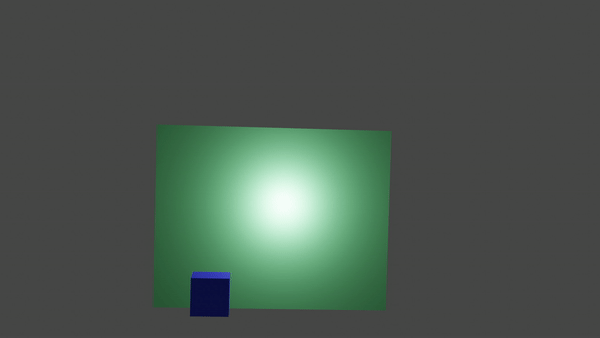

1. Estirar y encoger

Este principio consiste en tomar un objeto o cuerpo y deformarlo, para dar una sensación de movimiento, por ejemplo la podemos utilizar para dar salto a un personaje o también se puede utilizar en la piel, articulaciones, músculos, huesos, entre otros.
4.Accion directa o pose a pose
4. Acción directa o pose a pose: Estas son dos técnicas de animación las cuales hacen referencia a que se pueden crear una animación fotograma a fotograma que traen como consecuencia acciones sin tiempo determinado de duración que es la animación directa, o crear unas poses claves como se hace para animar el caminado de un personaje que determina 7 poses clave y luego trabajar en los fotogramas intermedios para crear transiciones controladas, lo que se llama pose a pose.
2. Anticipación
2. Anticipación: Este principio nos permite llamar la atención de nuestro espectador ya que sirve para dirigir la mirada de éste, de un punto donde podría ocurrir algo al punto donde se inicia esa acción, por ejemplo un atleta que se alista para partir de la meta, un jugador de fútbol que se alista para patear un penal u algo tan sencillo como un personaje que va a estornudar.
5. Acción continuada y superpuesta

Al aplicar estas dos acciones podemos lograr unas animaciones más naturales y creíbles ya que por un lado la acción continuada utiliza el principio de la inercia donde por ejemplo tomamos un personaje que está corriendo y se detiene y el cabello, ropa y otras partes del cuerpo no se detienen de inmediato si no que paulatinamente se detienen después de que el cuerpo se ha quedado estático. Por otro lado la superposición hace referencia a realizar animaciones donde por ejemplo al dar un salto no podemos permitir que los dos pies se apoyen al mismo tiempo, si no que aunque sutil primero debe apoyar un pie y luego el otro, lo que da más sensación de la naturalidad de la que se hablaba al principio.
3. Puesta en escena
Esta se define durante la creación del Storyboard y lo que quiere es dejar una idea clara de que sucede en el escenario, por lo que se utiliza para definir una acción, las intensiones del personaje e incluso su estado de ánimo por ejemplo a través del lenguaje corporal, entro otros.
6. Entradas y salidas lentas
Continuando con la naturalidad en la animación debemos entender que todo cuerpo afectado por la gravedad durante un movimiento tiene una aceleración y desaceleración, por lo que el inicio de una trayectoria es más lento mientras en la trayectoria hay más velocidad y antes de finalizar el recorrido aparece de nuevo la desaceleración o salida lenta.